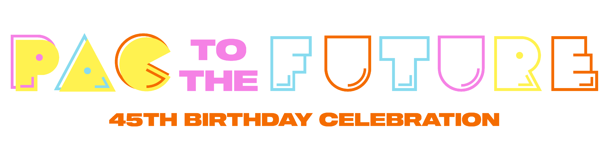
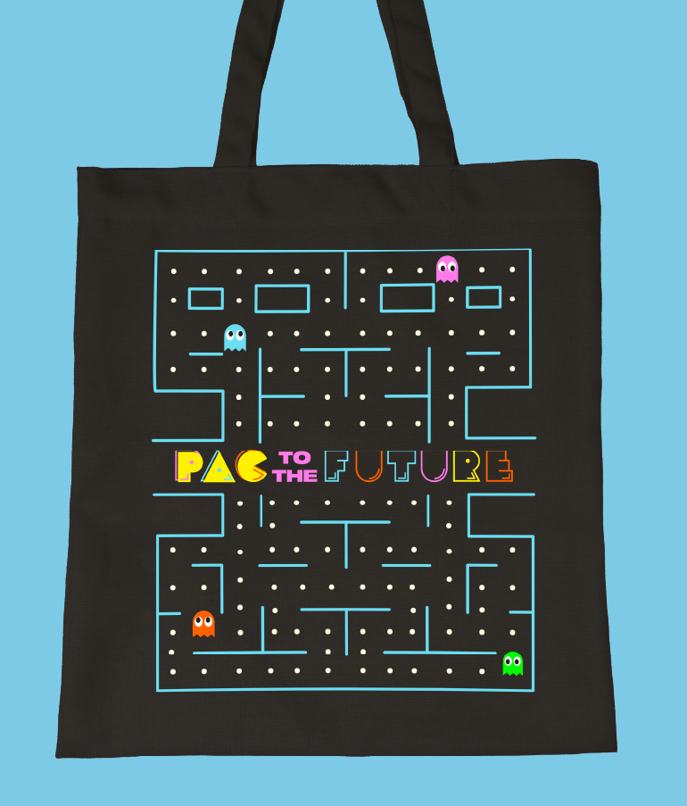
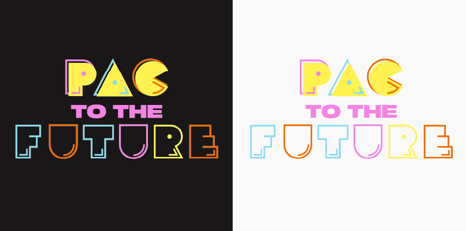
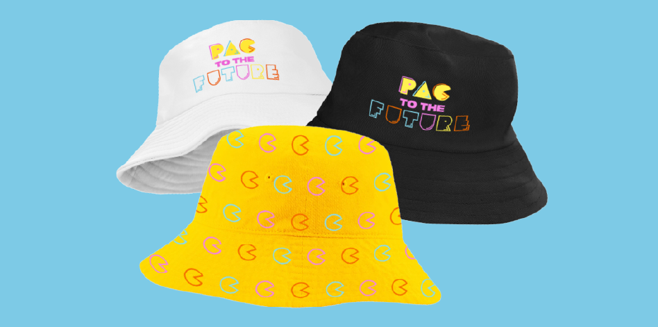
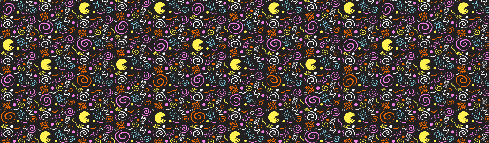
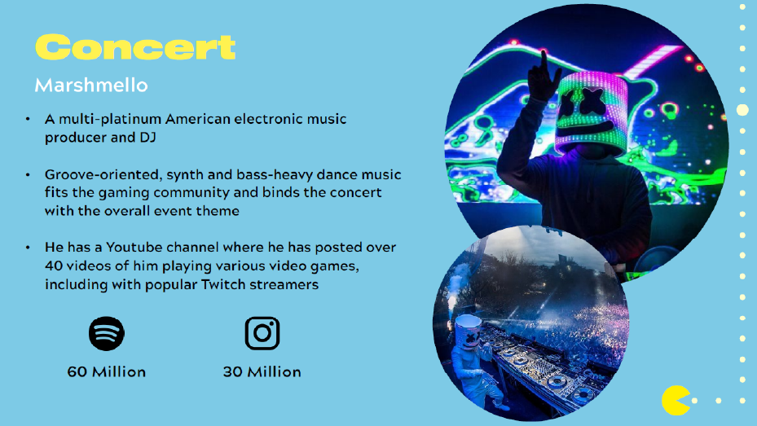
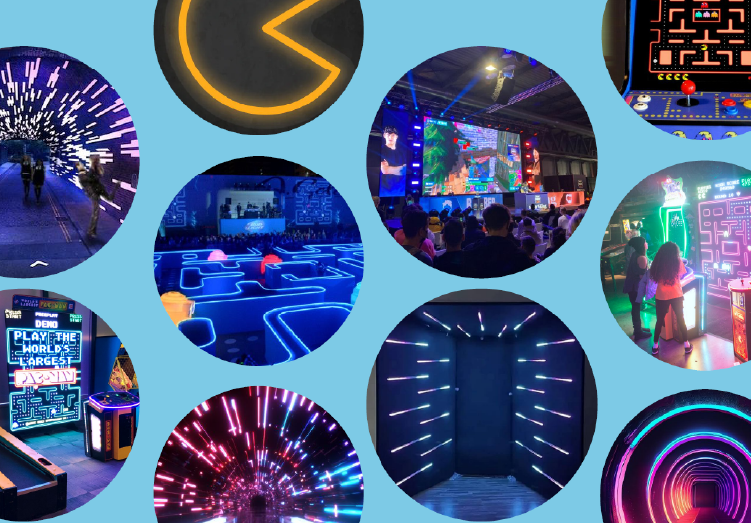
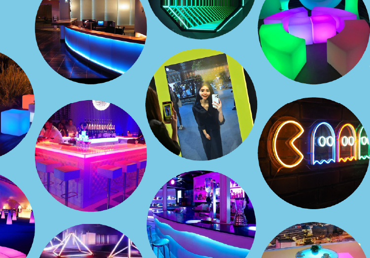
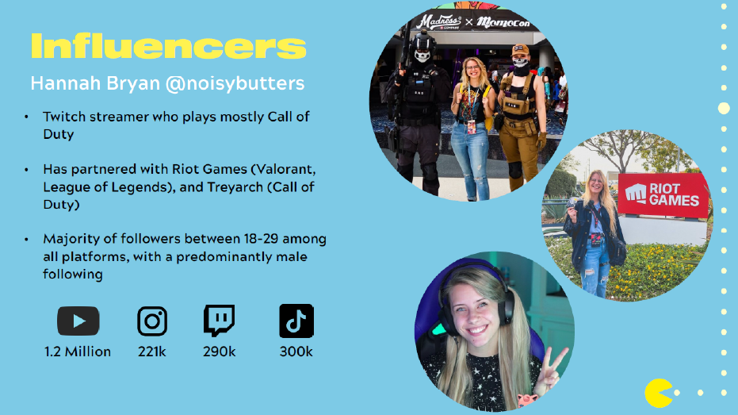

Concept plans for the “Pac to the Future” campaign was developed for Pac-Man's 45th birthday celebration in Los Angeles. Drawing on the franchise's 1980s heritage, the visual identity centered on neon color palettes, retro typographic treatments inspired by the original Pac-Man font, and a nostalgic futurist tone. The branding included both primary and alternate logos. This design system extended across event merchandise and giveaway concepts, creating a cohesive and nostalgic experience.









Website Hand Coded by Leah Mozeleski
Best Viewed on Desktop